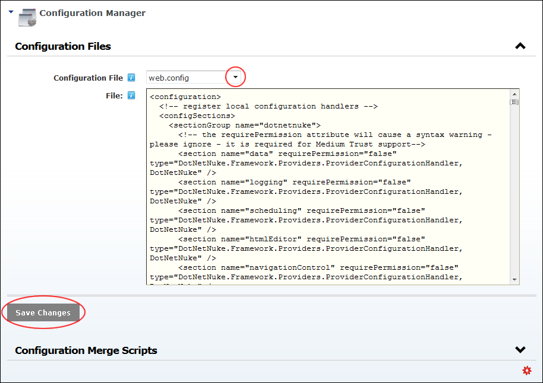

Modifying Configuration Files
How to modify DNN Configuration files using the Configuration Manager.
- Navigate to Host >
 Configuration Manager.
Configuration Manager.
- Expand the Configuration Files section.
- At Configuration File, select the file to be modified from the drop down list. This loads the selected file into the File text box. Note: The message "You will lose your current changes if you load a new config file!" is displayed each time you select a new config file, regardless of whether you have saved your changes.
- In the File text box, edit the file as required.
- Click the Save Changes button.

Note: If the changes require the web site to be reloaded, a message reading "Changing the web.config will cause your website to reload and may decrease site performance while the application is reloaded by the webserver. Would you like to continue?" will be displayed. In this scenario, click the OK button to confirm.